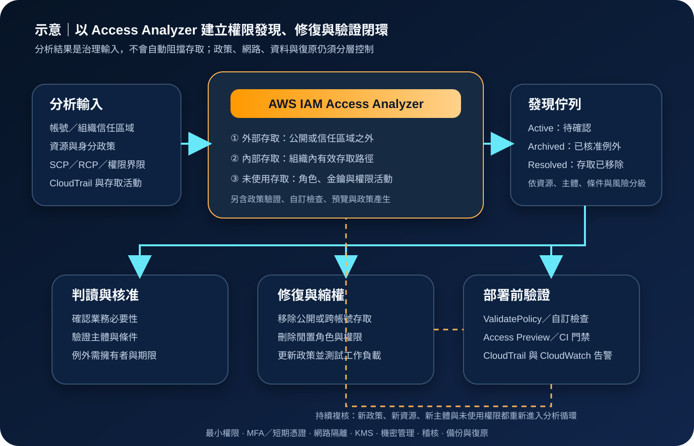

AWS IAM Access Analyzer：權限路徑分析與最小權限治理
AWS Identity and Access Management Access Analyzer 以政策邏輯與存取活動分析協助辨識公開、跨信任區域、組織內部及長期未使用的權限，並提供政策驗證、存取預覽、自訂檢查與政策產生能力。它是權限治理與修復的偵測層，不會自動阻擋網路流量、撤銷權限、加密資料或完成備份。
作者：Dr. William｜查閱與發布：2026-10-30
服務定位
AWS IAM Access Analyzer 協助建立、驗證與縮減 AWS 權限。外部存取分析器以帳號或 AWS Organizations 組織作為信任區域，找出受支援資源被公開或分享給信任區域之外主體的情況；內部存取分析器呈現組織或帳號內哪些 IAM 使用者與角色可存取指定重要資源；未使用存取分析器則依設定的使用期間，找出閒置角色、未使用的使用者憑證與未使用權限。
服務也可在部署前驗證 IAM 政策語法與最佳實務、執行自訂政策檢查、預覽資源政策可能新增的外部存取，並依 CloudTrail 活動產生可再調整的政策範本。分析器、政策檢查與政策產生各自解決不同問題，不能把單一綠色結果視為完整授權證明。
核心概念與服務邊界
分析器與發現
- 信任區域：外部分析以指定帳號或組織界定可信主體；區域內分享通常不產生外部存取發現。
- 外部存取分析器：分析受支援資源的資源型政策及相關控制，找出公開或跨信任區域存取。
- 內部存取分析器：針對選定重要資源計算組織或帳號內主體的有效存取路徑。
- 未使用存取分析器：依活動期間辨識閒置角色、使用者密碼、Access Key 與未使用服務或動作權限。
- 發現狀態：Active 代表仍待處理，Archived 代表已接受或暫不處理，Resolved 代表形成發現的存取已移除。
- 封存規則：可自動封存符合條件的新發現，但規則值與業務合理性仍由客戶驗證。
政策工具
- 政策驗證：檢查 JSON 政策語法、ARN、動作、條件鍵及 AWS 最佳實務，回傳錯誤、警告與建議。
- 自訂政策檢查：比較參考政策、禁止動作或資源，或檢查公開存取，可放入 CI/CD 門禁。
- Access Preview：在部署資源政策前預覽可能產生的外部存取發現。
- 政策產生：分析最長 90 天的 CloudTrail 活動與最後存取資訊，產生最小權限調整起點。
- 區域性：外部與內部分析器須依使用資源的區域啟用；未使用存取不需要在每個區域重複建立。
- 唯讀分析：服務產生資訊與建議，不會自行修改資源政策、角色、金鑰政策或網路設定。
適合與不適合的使用情境
適合
- 組織需要持續找出 S3、KMS、Lambda、SQS、SNS、Secrets Manager、ECR、EFS、快照或 IAM 角色的外部分享。
- 重要資料資源需要盤點組織內哪些使用者與角色具有有效存取。
- 大量 IAM 角色與使用者權限長期累積，需要以未使用活動資料安排縮權與清理順序。
- 平台團隊希望在 CloudFormation、Terraform 或自建發布流程中加入政策驗證及自訂安全門禁。
- 開發團隊需要在政策正式套用前預覽外部存取，避免把測試資源或正式資料意外公開。
- 既有角色權限過寬，需要以 CloudTrail 活動產生政策範本，再由擁有者補充必要資源與條件。
不適合或不能單獨完成
- 即時封鎖惡意網路流量、Web 攻擊或 DDoS；應使用安全群組、Network Firewall、WAF、Shield 等控制。
- 偵測惡意 API 行為、憑證遭竊或工作負載入侵；應搭配 GuardDuty、Security Hub、CloudTrail 與事件應變。
- 以未使用發現直接刪除角色或權限，未先涵蓋季節性、緊急、批次及災難復原活動。
- 把 Archived 當成永久安全核准，卻沒有資源擁有者、理由、到期日與重新複核。
- 期待政策產生完整記錄所有資料面操作；部分資料事件與未被觀測期間的必要行為可能不在範本內。
- 取代 IAM Identity Center、MFA、短期憑證、SCP、權限界限、資源政策、KMS 或 Secrets Manager。
示意故事案例：資料平台清理跨帳號與閒置權限
以下為示意案例，不代表特定企業或正式部署。 一家公司以多個 AWS 帳號分隔研發、資料分析與正式環境。資料湖 S3 儲存貯體、KMS 金鑰及 DynamoDB 資料表曾為短期專案開放跨帳號存取；專案結束後，部分資源政策與角色仍保留舊主體。另有批次角色獲得廣泛權限，但近半年只使用少數服務。
安全帳號建立組織層級外部存取分析器，並在有受支援資源的各區域啟用；對重要資料資源另建立內部存取分析器，未使用存取分析器則集中檢查 IAM 使用者與角色。發現先送入工單，由資源擁有者確認主體、用途與期限。無業務需求的跨帳號政策被移除，必要分享改以組織條件、特定 ARN 與最小動作限制；長期閒置角色先停用測試，再依變更流程刪除。
批次角色以 CloudTrail 活動產生政策範本，但團隊不直接套用，而是補上季末批次與復原演練所需動作，在測試帳號驗證後才替換舊政策。所有新政策先通過 ValidatePolicy、自訂政策檢查與 Access Preview。管理者使用 IAM Identity Center、MFA 與短期憑證；資料使用 KMS，應用機密放在 Secrets Manager 或 Parameter Store，CloudTrail 集中保存並由 CloudWatch 告警高風險變更。

建置與運作流程
- 定義治理範圍：盤點 AWS Organizations、帳號、區域、重要資源、IAM 主體、資料分類與現有稽核要求。
- 選擇分析器類型：分別決定外部、內部及未使用存取分析需求，不以其中一種取代其他類型。
- 設計信任區域：確認應以單一帳號或整個組織作為信任邊界，並記錄允許的外部帳號、組織與服務主體。
- 部署區域覆蓋：外部與內部分析器依受支援資源所在區域啟用；未使用分析器避免無必要跨區重複與重複計費。
- 限制管理權限：以 IAM 最小權限分離建立分析器、讀取發現、封存、刪除與自訂政策檢查權限。
- 建立分流規則：依資源敏感度、公開存取、外部主體、權限範圍與正式環境設定優先級。
- 驗證每項發現：確認政策原文、主體、資源、條件、跨帳號關係、業務用途與補償控制，不只看摘要。
- 修復非預期存取：修改資源政策、角色信任政策、身分政策、SCP、RCP、權限界限或 KMS 金鑰政策。
- 治理核准例外：封存規則與 Archived 發現必須有擁有者、理由、到期日及重新複核週期。
- 縮減未使用權限：先涵蓋完整業務週期與復原演練，再分階段移除閒置角色、憑證、服務與動作。
- 建立部署門禁：在 CI/CD 執行政策驗證、自訂政策檢查及適用的 Access Preview，失敗時阻止發布。
- 保護活動資料：CloudTrail 日誌集中至受保護帳號與 S3，使用 KMS、物件鎖定或保留政策，限制政策產生角色的讀取範圍。
- 整合監控：以 EventBridge、CloudWatch、Security Hub、工單或 SIEM 追蹤新發現、分析器變更與長期未處理項目。
- 定期複核：檢查分析器涵蓋、封存規則、例外期限、付費資源數、未使用門檻與修復成效。
成本、可用性與維運考量
外部存取分析、基本政策驗證與政策產生目前不另收取 Access Analyzer 費用；內部存取依每個分析器監控的資源數與區域按月計費，未使用存取依每個分析器分析的 IAM 使用者與角色數按月計費，自訂政策檢查則依 API 檢查次數計費。CloudTrail、S3、KMS、CloudWatch、EventBridge、Security Hub、SIEM、工單與資料傳輸仍可能產生費用，實際金額應依查閱日定價頁及帳單驗證。
外部與內部分析器具有區域性，必須確認所有受支援資源所在區域均有治理覆蓋。外部存取的政策變更通常需要一段分析時間，部分情況可能更久；內部分析初次掃描也可能需要數分鐘至數小時。發現延遲、主控台摘要延遲或分析器中斷時，CloudTrail、AWS Config、資源清冊與變更管理仍須提供第二條證據路徑。
維運量取決於資源數、IAM 主體數、跨帳號關係與例外數量。分析器建立後若沒有發現，可能代表沒有非預期存取，也可能是區域、資源類型、權限或涵蓋設定不完整。應以已知測試政策驗證偵測路徑，並定期確認服務連結角色、分析器狀態、工單整合與告警仍正常。
IAM Access Analyzer 特有資安風險與控制
- 信任區域設定過寬：若把整個組織都視為可信，外部分析不會標示組織內不當分享；重要資源應搭配內部存取分析與資料擁有者複核。
- 區域覆蓋缺口：外部與內部分析器依區域部署，使用組織清冊比對每個有受支援資源的區域。
- 封存規則掩蓋風險：規則條件可能過寬或值輸入錯誤；採雙人覆核、IaC、變更紀錄、到期日與抽樣檢查。
- Archived 被視為安全：封存只改變處理狀態，不會移除存取；每項例外仍需擁有者、業務理由與補償控制。
- 未使用資料誤判：季節性、緊急與災難復原權限可能長期未被使用；縮權前先完成完整週期測試與回復計畫。
- 政策產生不完整：未觀測到的必要動作、部分資料事件與 PassRole 等資訊可能缺漏；範本須人工審查、測試及逐步發布。
- 政策檢查被繞過：把 ValidatePolicy、自訂檢查與 Access Preview 放入受保護分支及部署角色，禁止任意跳過。
- 分析器管理權過大：建立、刪除、封存與讀取權限分離，管理者透過 IAM Identity Center、MFA 與短期憑證操作。
- 發現含敏感架構資訊：發現可能揭露資源 ARN、外部主體及權限路徑；限制讀取、匯出、工單與 SIEM 欄位。
- CloudTrail 來源遭竄改或缺漏：使用組織級多區域 trail、受保護日誌帳號、S3 防刪除、KMS 與完整性驗證。
- 公開存取只修政策不修網路：同時檢查 S3 Block Public Access、VPC、端點政策、安全群組、WAF 與應用層授權。
- KMS 解密路徑被忽略：分析資源政策時同步驗證 KMS 金鑰政策、Grant、跨帳號條件與加密內容的實際可讀性。
- 機密散落：credential、Access Key、Secret Key、Token、密碼與 cookie 不得放入政策描述、標籤、工單或程式庫；應使用 Secrets Manager 或 Parameter Store。
- 告警疲勞：依公開存取、資料敏感度、正式環境與權限範圍分級，設定修復時限而非把所有發現同等處理。
- 單一偵測來源：Access Analyzer 與 CloudTrail、CloudWatch、Config、GuardDuty、Security Hub 及人工存取複核交叉驗證。
- 復原設計缺口：保存分析器與封存規則的 IaC、工單證據及政策版本；工作負載資料另以 AWS Backup 與跨區策略保護。
共同責任邊界
AWS 負責 IAM Access Analyzer 受管服務、底層基礎設施、政策分析引擎與服務控制面的安全。客戶負責選擇正確分析器與信任區域、完成區域覆蓋、授予最小管理權限、判讀及修復發現、治理封存規則、保護 CloudTrail 與整合系統，並驗證最終政策符合業務及法規。
雲端平台團隊負責分析器、Organizations 與部署門禁；資源擁有者負責確認分享必要性；身分團隊負責 IAM、Identity Center、MFA 與短期憑證；資安團隊負責分級、監控與事件應變；資料團隊負責 KMS、機密、備份與復原。IAM 最小權限、MFA／短期憑證、網路隔離、公開存取治理、KMS 加密、Secrets Manager 或 Parameter Store、CloudTrail／CloudWatch、備份與跨區復原須共同落實。
上線與維運可執行檢查清單
- □ 已盤點帳號、組織、區域、重要資源、IAM 主體與資料分類。
- □ 外部、內部與未使用存取需求已分開評估，未以單一分析器取代全部能力。
- □ 外部與內部分析器已涵蓋所有使用受支援資源的區域。
- □ 信任區域符合實際治理邊界，重要組織內存取另有分析與複核。
- □ 分析器與服務連結角色狀態正常，已用已知測試案例驗證偵測流程。
- □ 建立、讀取、封存與刪除分析器權限已採最小權限及職責分離。
- □ 管理者使用 IAM Identity Center、MFA 與短期憑證，不共用管理帳號。
- □ 發現依公開存取、敏感資料、正式環境與權限範圍分級並設定時限。
- □ 每項 Archived 發現與封存規則都有擁有者、理由、期限及複核紀錄。
- □ 未使用權限縮減前已涵蓋季節性、緊急、批次與災難復原活動。
- □ 政策產生結果已人工補充資源、條件與未觀測必要動作，且先在測試環境驗證。
- □ CI/CD 已執行政策驗證、自訂政策檢查與適用的 Access Preview。
- □ 公開存取修復同時檢查 VPC、端點政策、安全群組、WAF 與服務原生公開封鎖。
- □ 資料與日誌依分類使用 KMS，金鑰政策與 Grant 已測試。
- □ 應用機密使用 Secrets Manager 或 Parameter Store，未寫入政策、程式、工單或標籤。
- □ 組織級 CloudTrail 已集中保存，S3、KMS、完整性驗證與刪除保護已設定。
- □ CloudWatch、EventBridge、Security Hub、SIEM 或工單能接收新發現與高風險變更。
- □ Access Analyzer 與 AWS Config、GuardDuty、Security Hub 及人工複核結果定期交叉檢查。
- □ 已追蹤內部分析資源數、未使用分析 IAM 主體數、自訂檢查次數及周邊日誌成本。
- □ 分析器、封存規則、政策版本與修復證據已有受保護備份，工作負載另有跨區復原方案。
- □ 正式內容不含任何真實 credential、Access Key、Secret Key、Token、密碼或 cookie 值。
AWS 官方一手來源
- Using IAM Access Analyzer（查閱：2026-10-30）
- Understand how IAM Access Analyzer findings work（查閱：2026-10-30）
- IAM Access Analyzer findings（查閱：2026-10-30）
- Getting started with IAM Access Analyzer（查閱：2026-10-30）
- Resolve IAM Access Analyzer findings（查閱：2026-10-30）
- Archive rules（查閱：2026-10-30）
- IAM policy validation（查閱：2026-10-30）
- Checks for validating policies（查閱：2026-10-30）
- IAM Access Analyzer policy generation（查閱：2026-10-30）
- Logging IAM Access Analyzer API calls with CloudTrail（查閱：2026-10-30）
- IAM Access Analyzer quotas（查閱：2026-10-30）
- IAM Access Analyzer pricing（查閱：2026-10-30）
- AWS Shared Responsibility Model（查閱：2026-10-30）
內容說明
本文依查閱日可用的 AWS 官方文件整理，作為基礎學習與架構討論材料；實際部署仍須依最新支援資源、區域、分析器類型、信任區域、掃描延遲、活動期間、服務配額、定價、法規與測試結果調整。